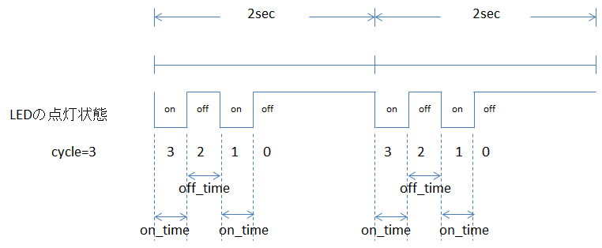

void BLE.setLedConfig(struct BLE_LED_CONFIG *conf);
void BLE.getLedConfig(struct BLE_LED_CONFIG *conf);
BLE.setLedConfig関数はBLEの状態に応じて変化するLEDの点滅制御を変えることが出来る関数です。
BLE.getLedConfig関数はLEDの点滅制御を取得する関数です。
struct BLE_LED_CONFIGは、次のデータで構成されています。
struct BLE_LED_CONFIG {
struct BLE_LED_PARAM sleep;
// DEEPSLEEP時のLED設定
struct BLE_LED_PARAM advertise;
// ADVERTISE時のLED設定
struct BLE_LED_PARAM connect;
// CONNECT時のLED設定
struct BLE_LED_PARAM serial_connect;
// SERIAL_CONNECT時のLED設定
};
各モードのLED設定は、次のパラメータで構成されています。
struct BLE_LED_PARAM {
uint8_t cycle;
// LED制御のサイクル(0または奇数)
uint8_t pin;
// LED制御の端子
uint8_t on_time;
// ON時間
uint8_t off_time;
// OFF時間
};

LEDの設定情報の構造体が保存されているポインタ。
| config.sleep.cycle | DEEPSLEEP中のLED制御回数 |
| config.sleep.pin | DEEPSLEEP中のLED制御端子 |
| config.sleep.on_time | DEEPSLEEP中のLEDのON時間 |
| config.sleep.off_time | DEEPSLEEP中のLEDのOFF時間 |
| config.advertise.cycle | ADVERTISE中のLED制御回数 |
| config.advertise.pin | ADVERTISE中のLED制御端子 |
| config.advertise.on_time | ADVERTISE中のLEDのON時間 |
| config.advertise.off_time | ADVERTISE中のLEDのOFF時間 |
| config.connect.cycle | CONNECT中のLED制御回数 |
| config.connect.pin | CONNECT中のLED制御端子 |
| config.connect.on_time | CONNECT中のLEDのON時間 |
| config.connect.off_time | CONNECT中のLEDのOFF時間 |
| config.serial_connect.cycle | SERIAL_CONNECT中のLED制御回数 |
| config.serial_connect.pin | SERIAL_CONNECT中のLED制御端子 |
| config.serial_connect.on_time | SERIAL_CONNECT中のLEDのON時間 |
| config.serial_connect.off_time | SERIAL_CONNECT中のLEDのOFF時間 |
なし